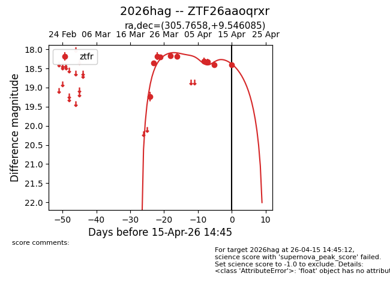
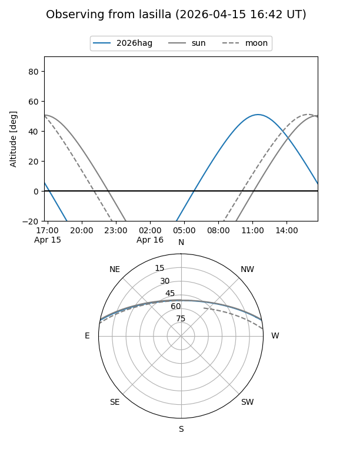
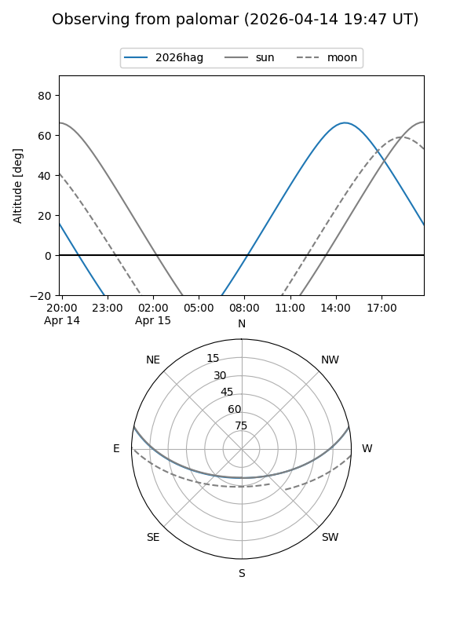
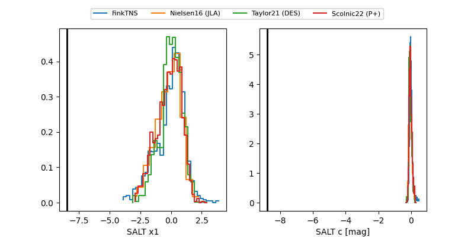

2026hag
Target 2026hag at 2026-04-15 14:55
Aliases and brokers:
FINK: link
Lasair: link
ALeRCE: link
TNS: link
YSE: link
alt names
ZTF26aaoqrxr (ztf,fink_ztf)
2026hag (tns,yse)
Coordinates:
equatorial (ra, dec) = 305.7658,+9.54608
equatorial (HMS+DMS) = 20:23:03.79,+09:32:45.90
galactic (l, b) = (52.4847,-15.42570)
Flags:
Photometry:
last ztfr=18.40
10 ztfr detections
Lightcurve

Visibility


Additional plots
